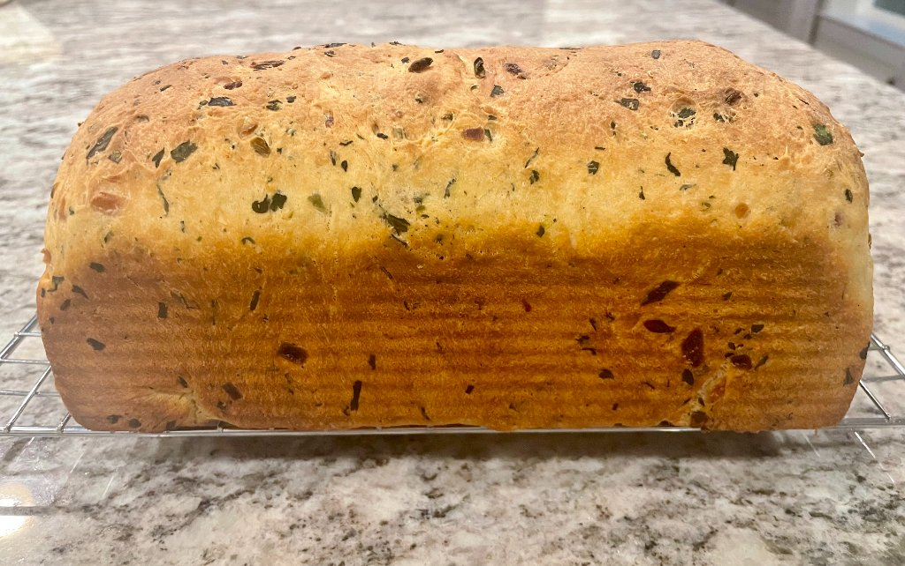

Bold Flavors.
Freshly Baked.
Small-batch artisan masala bread made with clean ingredients — crafted in Texas, every weekend.
Scroll

Small-batch artisan masala bread made with clean ingredients — crafted in Texas, every weekend.